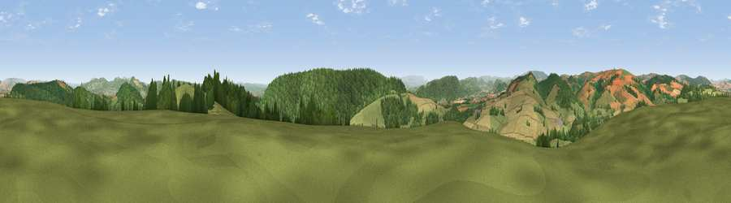

Viewpoint near Lingen
#6083 in England · top 16% of its area beats it · near LingenWhere it is
The exact computed spot (SO 38225 66375). Click the marker for map links.
The view, rendered

A 360° render of this exact spot computed from the terrain model, tree cover and land cover — summer colours, afternoon light, calibrated against photographs of famous viewpoints. Real trees, hedges and buildings will differ in detail.
The panorama
Grey silhouette: terrain skyline in each direction (720 bearings, Earth curvature and refraction included). Dashed green: skyline with trees (+15 m) and buildings (+8 m) as obstacles. Blue strip: how far the ground is visible on each bearing.
Where the view opens
Wedge length = distance to the farthest visible ground on that bearing (vegetation-aware). Rings at 10, 25 and 50 km.
What fills the view
44% woodland · 36% grassland · 20% cropland
Angular shares of the visible panorama (visual magnitude), not map area. Landscape diversity 0.47 (0–1 Shannon).
Key numbers
More beautiful places nearby
The staircase of upgrades: each row has a higher view potential than everything closer. Driving times are estimates from straight-line distance, calibrated against real road routing — check an actual route before setting out.
| Place | Direction | Drive | Score |
|---|---|---|---|
| Viewpoint near Shobdon | SSW · 2 km | ~6 min | 77.9 |
| Viewpoint near Leinthall Starkes | ENE · 6 km | ~14 min | 80.3 |
| Gatley Hill | ENE · 7 km | ~15 min | 82.6 |
| Viewpoint near Asterton | N · 22 km | ~37 min | 83.0 |
| Titterstone Clee | ENE · 24 km | ~39 min | 83.8 |
| The Lawley | NNE · 33 km | ~51 min | 85.8 |
| North Hill | ESE · 43 km | ~64 min | 86.8 |
| Worcestershire Beacon | ESE · 44 km | ~64 min | 87.1 |
52.29202, -2.90716 · source: screening · position refined by local search. Computed location — check access rights before visiting.